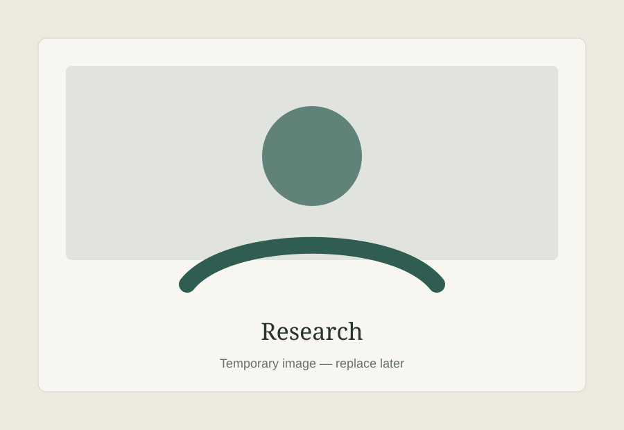

Skill Portfolio
Home
Work
← Back to Work
Skill Portfolio / Research Work
Research Work
Research summaries, literature reviews, analytical writing and research-gap analysis.

Research Summaries
Short, structured explanations of reports and papers.
→
Literature Review
Connecting findings, themes, methods and arguments across sources.
→
Research Gaps
Identifying what existing work does not yet explain.
→
Analytical Analysis
Moving from information to questions, evidence, interpretation and conclusions.
→